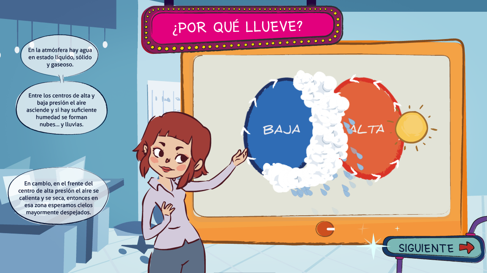

mesa del clima (weather table) - 2015
dirección de proyecto, diseño de interacción y programación
dispositivo interactivo en exposición permanente dentro del centro cultural de las ciencias, dependiente del ministerio nacional de ciencia y tecnología. la experiencia consta de tres relatos breves, en los cuales un personaje animado guía a usuarios a través de una serie de minijuegos que ilustran conceptos relacionados con el clima.
equipo de desarrollo:
+ diseño general, programación y dirección del proyecto: ariel uzal
+ programador principal: martín molfino
+ ilustraciones y animaciones: lucía castez
+ diseño visual: lupe rodrígez & natalia varela
+ diseño y edición de sonido: gastón mansilla
project lead, interaction design and programming
interactive device permanently displayed at the cultural center of science (centro cultural de las ciencias). the experience consists of three short stories, in which an animated character guides the user through a series of minigames that teach concepts related to the weather.
project team:
+ general design, coding and project lead: ariel uzal
+ main software developer: martín molfino
+ illustrations and animations: lucía castez
+ visual design: lupe rodrígez & natalia varela
+ sound design and editing: gastón mansilla
